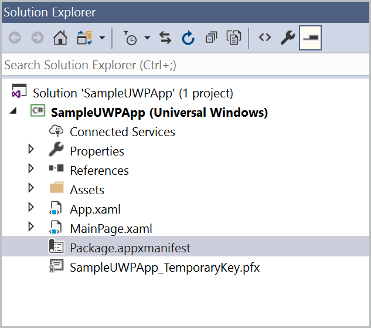

Create icons using Visual Studio's asset generation tool
While handcrafting each icon file will create the best, most consistent user experience, teams running short on resources can take advantage of Visual Studio's Manifest Designer. This tool can create an entire set of app icons and tile images from a single image. This is useful to create an initial set of icons, but will not achieve the same result as handcrafting each icon file, as Visual Studio will have to scale your image to create the required image sizes.
Launching the Manifest Designer
- Use Visual Studio to open a WinUI or UWP project.
- In the Solution Explorer, double-click the Package.appxmanifest file.

- Visual Studio displays the Manifest Designer.
{kind=link}
- Click the Visual Assets tab.
{kind=link}
Generating icons with the Manifest Designer
Click the
...next to the Source field and select the image you want to use. For best results, use a vector-based image, Adobe Illustrator file, or PDF. If you're using a bitmap image, make sure it's at least 400 by 400 pixels so that you get sharp results.In the Display Settings section, configure these options:
- Short name: Specify a short name for your app.
- Show name: Indicate whether you want to display the short name on medium, wide, or large tiles.
- Tile background: Specify the hex value or a color name for the tile background color. For example, #464646. The default value is transparent. NOTE: This setting will be ignored on versions of Windows that support theme-aware Live Tiles.
- Splash screen background (Optional): Specify the hex value or color name for the splash screen background.
Click Generate.
Note
Visual Studio's Manifest Designer doesn't generate a badge logo by default. That's because your badge logo is unique and probably shouldn't match your other app icons. For more info, see Badge notifications for Windows apps.